Truss
A platform for experts to monetize their knowledge and experience.
Truss enables experts to monetize their knowledge and experience through instant advice and premium mentorship.
- Role
- Lead Product Designer
- Timeline
- 2021–2023
- Team
- Product, Engineering, Data Science, UX Research
- Company
- Endeavor
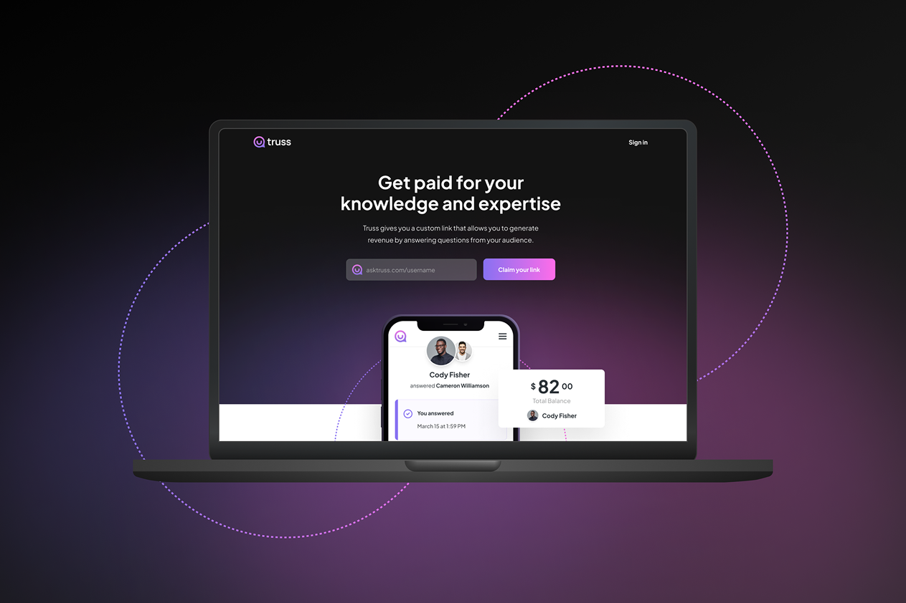
Overview
We believed creators needed personalized advice, not another course.
Truss started life as Creator Collective, a project inside Endeavor exploring how the talent agency's network could help digital creators grow their businesses. Endeavor had the client base and the relationships. What it didn't have yet was the product.
My role
I was lead designer across both products, from the first research conversations through the platform Truss eventually became, working closely with engineering, product management, data science, and UX research at every stage.
This case study follows the whole arc: the assumption we started with, what the research told us instead, the marketplace we built and tested, why it broke down, and the simpler product that came out the other side.
Initial direction
We started by trying to build an education platform.
We talked to entertainment business professionals and dug into the creator economy: the independent creators, curators, and community builders building real businesses on top of their audiences. The instinct that followed was to build courses, taught by people with real experience, on branding, content strategy, and growing income streams.
The vision was an education product that could equip creators with business knowledge and mentorship, wherever they were in their journey, and compete with the likes of MasterClass and Skillshare.
Design Sprint
Then we learned our assumption was wrong.
I ran a Design Sprint to test the education-platform idea quickly with marketers, product managers, business stakeholders, and engineers. By the end of the week we had a working prototype: courses, lessons, a creator community, built in the mold of Skillshare and Coursera.
The results invalidated the direction. Testers didn't respond to traditional online education. One tester said it reminded her of being back in school — it didn't fit how she actually worked.
The problem wasn't a lack of information. It was access.
Creators wanted direct access to people who had already done what they were trying to do, not another course to sit through.
A few things came out of the sprint clearly. Creators needed specific, direct advice for their niche business, not general instruction. Time mattered — they didn't have the patience to sit through a course to find the answer to one question. And more than once, someone told us they needed a mentor, or a partner, to work through a real problem with them.
Digital creators who were already monetizing had the vision and the passion. What they lacked was the know-how, and access to the right people.
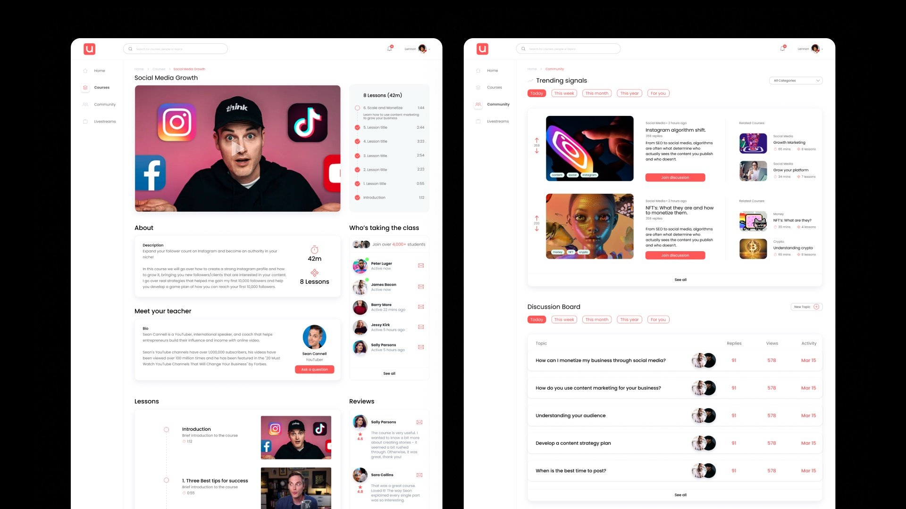
Validation
We tested whether people would actually pay for that access.
Based on what we'd learned, we tested a new prototype: matching creators with digital experts for mentorship, advice, and hands-on help with things like brand deals and negotiation. We ran 60-minute moderated usability interviews, hosted on UserTesting, with creators sourced from UserTesting and personal connections.
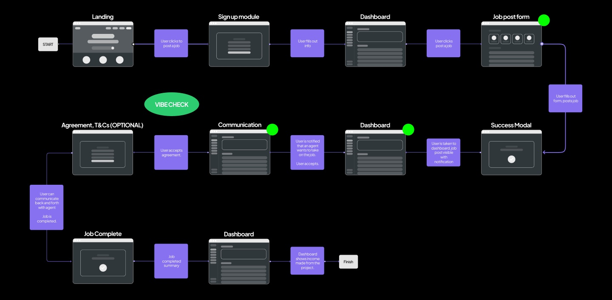
Strong early signal
Asked how likely they'd be to use the product, testers ranked it 8 or higher across the board — three of four gave it a perfect 10.
We followed up with a Needs Analysis survey of 20 creators, asking them to rank the problems they cared about most.
- 90%
- Lacked access to mentors
Ranked "I lack access to mentors and experts who can give me personalized advice" a 4 out of 5 or higher. - 85%
- Felt overwhelmed
Running their business while creating content and growing their brand left them feeling overwhelmed. - 65%
- Couldn't find providers they trusted
Finding the right service providers felt difficult, expensive, or lacking the credibility they needed.
MVP1
First, we tested the demand.
Our first landing page was a marketing MVP: built to test our value proposition, messaging, and positioning, and to start building a pre-launch audience ahead of a public launch. It wasn't meant to sell anything yet — the goal was to drive applications for early access.
Target
300 applications, plus 30 qualified service-provider applicants for the supply side.
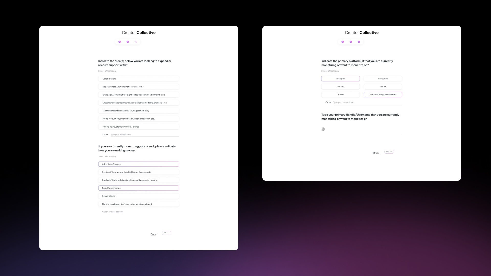
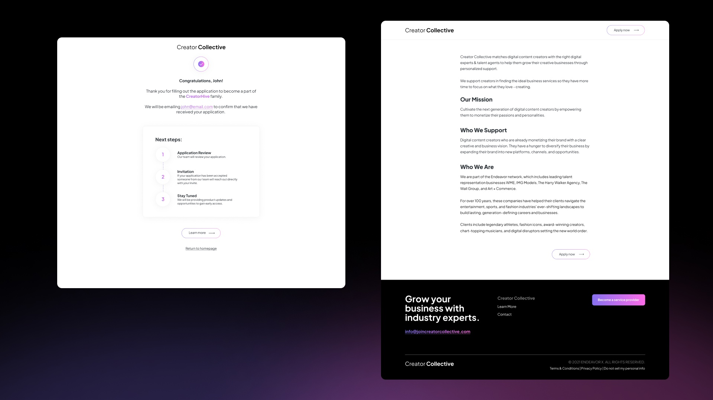
We didn't hit the 300 target, but the signal was cheap enough to act on.
- 82
- Applications (target: 300)
- $30
- Google Search spend
- $0.68
- Cost per applicant
- ~27%
- Qualified expert leads
Missing the target didn't matter much — the cost to generate real signal was low enough to justify building further.
MVP2
Then we built the marketplace.
MVP2 was a stepping stone toward an in-house product: a no-code marketplace built on Sharetribe rather than months of custom engineering. It let us test something MVP1 couldn't — an actual transaction between a creator who needed expert services and a vetted service provider who could offer them.
The objective was simple: prove that creators who said they valued this were also willing to pay for it.
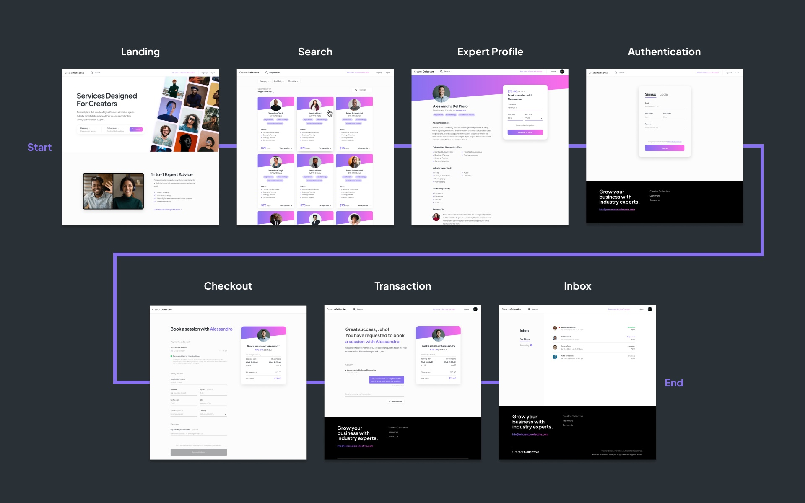
It worked well enough to validate two things: the design and branding resonated, and people were willing to pay.
What didn't work
The marketplace wasn't working. But the problem was real.
Sharetribe got us to a working product fast, but it came with real limits. There was no native video calling, so sessions had to be scheduled and hosted outside the app — which meant conversations, and payments, could just as easily move off platform. We were also locked into one-hour sessions, when shorter, 15-minute increments would have matched how creators actually wanted help.
Trust and pricing were the bigger issues
Our research showed users would pay $50–$100 for expert time. Some experts were charging as much as $500 an hour. Few users converted at those price points, and it wasn't always clear what they'd actually receive, or how experts had been vetted in the first place.
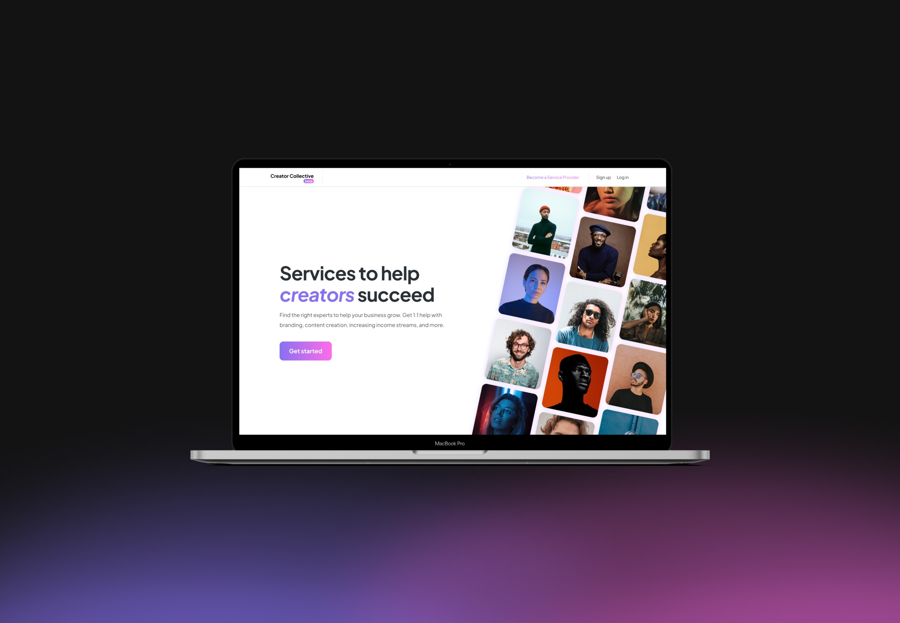
Too many factors were outside our control. The marketplace itself had become complex and confusing, and trust in unfamiliar experts was a barrier we hadn't solved. As a team, we kept arriving at the same conclusion, meeting after meeting.
The turn
We weren't wrong about the problem. We were wrong about the product.
The pivot
What if experts brought their own audiences?
Instead of asking people to discover and trust a stranger through a marketplace, what if experts brought their own audience directly into the product? Someone already had the trust — we didn't need to manufacture it.
That flipped the model. Rather than supplying our own pool of vetted experts, the product became a tool for experts to market their own services to the audience they'd already built. It simplified the product considerably, and it became the foundation for Truss.
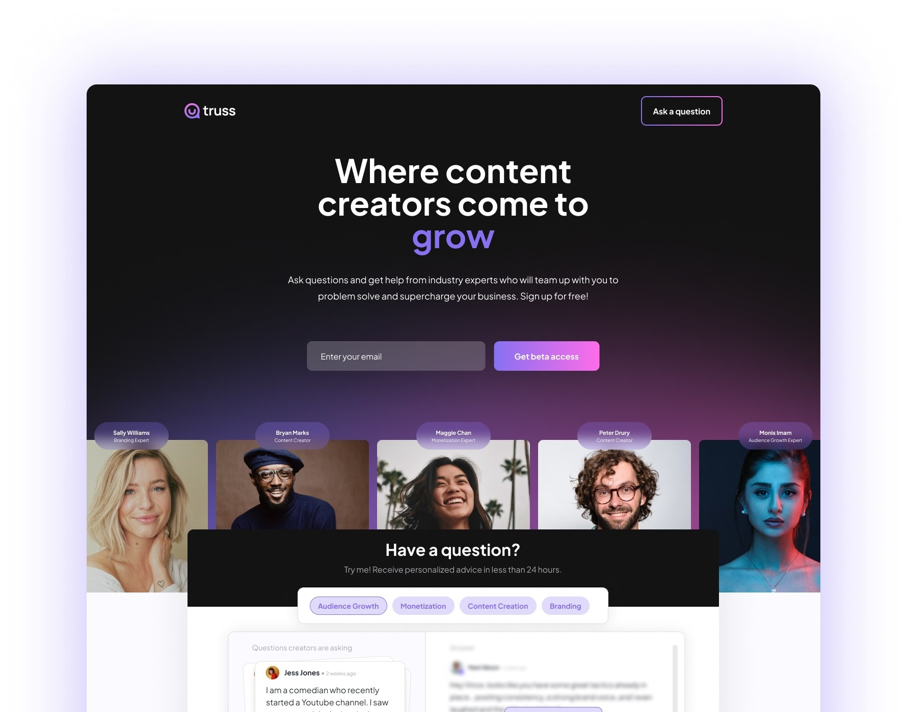
Truss
That became Truss.
Truss is a platform that enables experts to monetize their knowledge and experience through instant advice and premium mentorship.
The flow is simple: an expert signs up, creates a profile and a custom vanity link, sets up service offerings, and shares the link with their audience. Their audience clicks through and books directly — no discovery, no unfamiliar marketplace, no vetting process to trust.
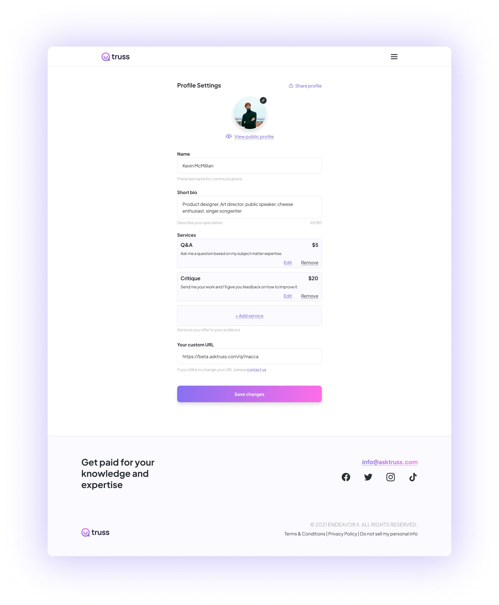
Building the product
From hypothesis to product.
Once we had signal, we built the platform. I designed the system end to end: onboarding, profile development, services, payments, inbound requests, messaging, booking, video responses, email, and the social assets experts needed to promote their link.
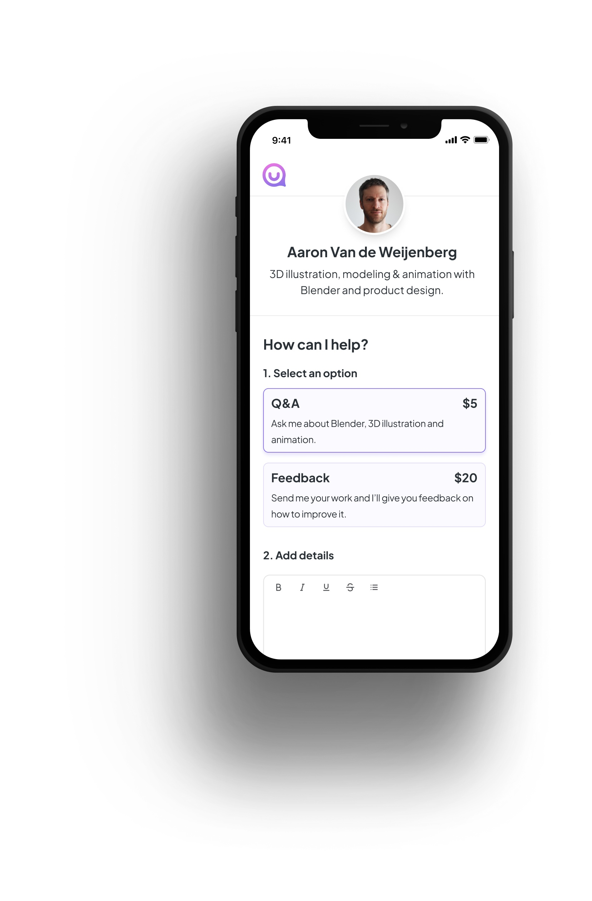
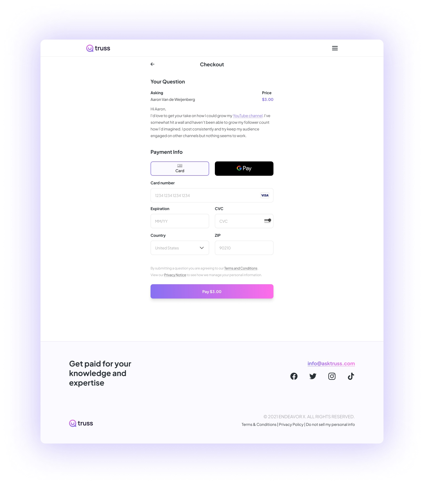
Product exploration
We simplified the experience around the core exchange.
A lot of the early thinking happened on paper. Messaging was one of the harder problems: how an expert responds to a request, how an asker follows up, what happens while everyone waits. We sketched through the expert and asker views separately before building either one, working through where the friction would show up before it hit a screen.
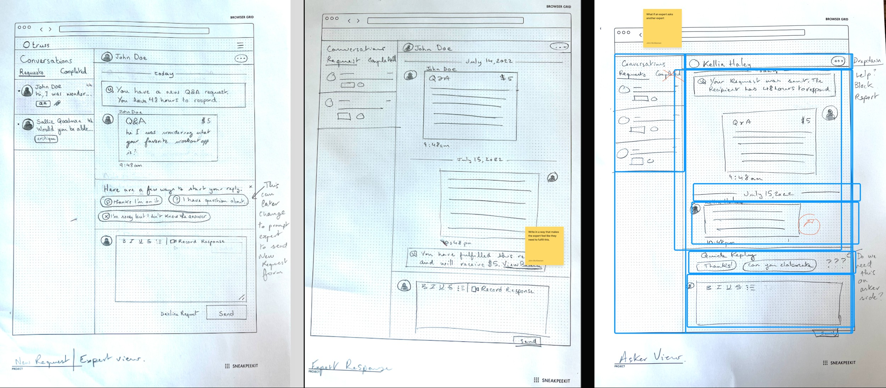
Final product
Experts could finally turn their knowledge into a service.
The final product gave experts a single link to share: a profile, their services, and a direct way for their audience to pay for their time. No marketplace to browse. No stranger to vet.
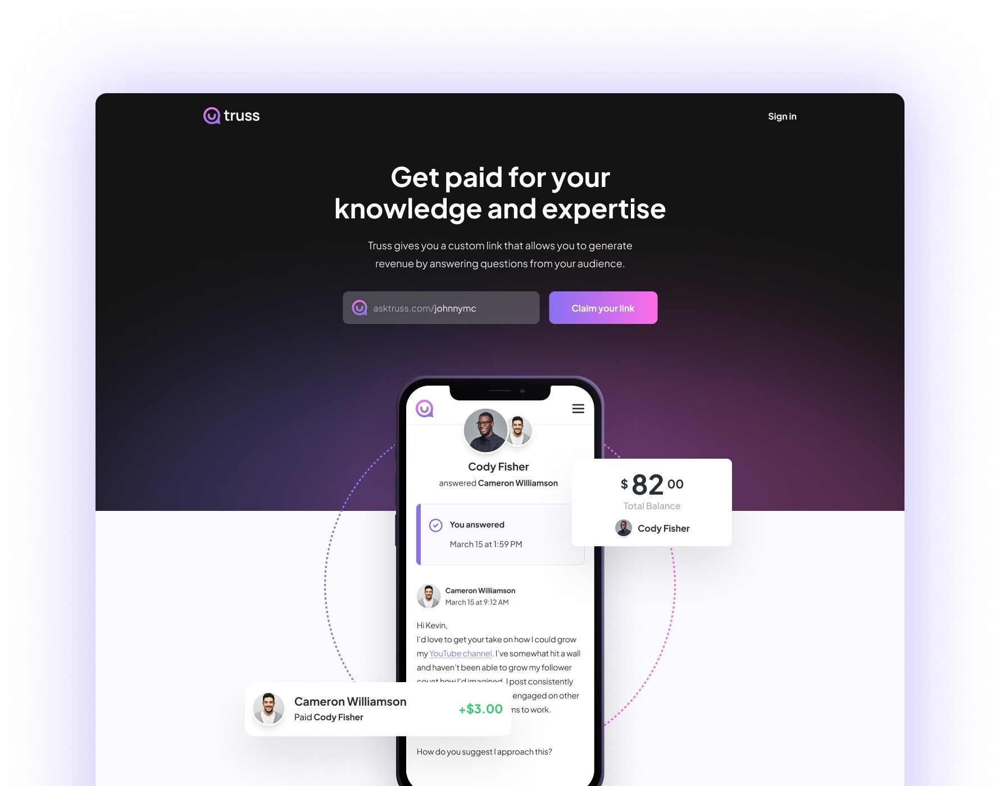
Outcome
After two years, we found product-market fit.
Steady revenue
The platform started seeing steady revenue week over week.
Organic growth
People were signing up without much marketing spend behind it.
Room to invest
For the first time, we could put real budget behind marketing the platform.
Room to expand
Signal from high school and collegiate athletes pointed to segments worth going after next.
Closing
The marketplace was getting in the way.
The breakthrough wasn't a new feature. It was realizing that the thing we'd built to solve the problem — the marketplace itself — was what stood between people and the solution.
Once we stopped trying to manufacture the relationship between expert and audience, and let the ones that already existed do the work, the product got a lot simpler. And it started working.